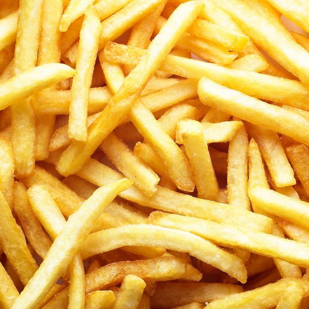

Patatas Fritas
Receta de patatas fritas caseras

Ingredientes
3 o 4 patatas (300g.)
4 dientes de ajo
Aceite de oliva
Sal
Elaboración (pasos)
Calentar aceite en una sartén
Añadir las patatas cortadas, la sal y los ajos
Freir al gusto
Servir en un plato
Regresar